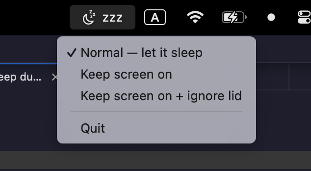

macOS · Swift · Claude Code
AwakeBar — a 90-line menu-bar app to keep my Mac awake
My Mac kept falling asleep the moment I closed the lid — right in the middle of long agent runs. caffeinate keeps the screen on but ignores a closed lid, and toggling clamshell sleep means memorizing pmset flags. So I described the annoyance to Claude Code and, one session later, had a menu-bar toggle with three honest states.

The annoyance
There are two different "keep awake" behaviors and macOS makes you pick them separately. caffeinate -dimsu stops the display and system from idling — but the second you shut the lid, the Mac sleeps anyway. Surviving a closed lid is a different setting, pmset disablesleep, which is root-only and easy to leave on by accident. I wanted one control that made the distinction obvious and was honest about which mode I was in.
Three honest states
| State | What it does |
|---|---|
| 🌙 Normal | Default macOS behavior. Let it sleep. |
| ☕ Keep screen on | Display never sleeps. Closing the lid still sleeps. |
| ☕• + Ignore lid | Also survives closing the laptop — clamshell mode. |
It's a radio group, so the checkmark always shows the current mode. No guessing whether "keep awake" is on, and no separate off switch to forget.
How it works
- Screen-on holds an
IOPMAssertion(PreventUserIdleDisplaySleep) — the same mechanismcaffeinateuses, but in-process. There's no background process to leak; quit the app and normal sleep returns instantly. - Ignore-lid runs
pmset -a disablesleep 1. Because that's root-only, the installer writes a sudoers rule scoped to exactly those two commands and nothing else — validated withvisudo -cf— so you're never prompted for a password after setup. - It's a real app bundle with
LSUIElementset: menu-bar only, no Dock icon, launches at login via a LaunchAgent.
The whole thing is about 90 lines of Swift with zero dependencies — swiftc from the Xcode Command Line Tools compiles it, no Xcode project, no package manager.
The one gotcha: an invisible icon
First run, the app was clearly running but I couldn't see it. Not a bug: on Macs with a notch, or when the menu bar is full, macOS silently hides overflow status items and offers no built-in way to pin them. The fix is a free menu-bar manager — Ice — which reveals hidden items so you can drag AwakeBar to the always-visible side:
brew install --cask jordanbaird-iceWorth knowing for any menu-bar app you build, not just this one.
The meta part: I didn't write a line
I never opened an editor. I described the annoyance, tested each build live in my own menu bar, and we iterated — until the icon showed up, the lid toggle stopped asking for a password, and it survived a reboot. The interesting shift isn't "AI wrote Swift for me"; it's that a five-minute annoyance is now worth fixing, because the cost of a proper, installable, open-source tool dropped to one conversation.
Try it
Open source (MIT), macOS, needs only the Xcode Command Line Tools:
git clone https://github.com/tatarco/awakebar
cd awakebar && ./install.sh